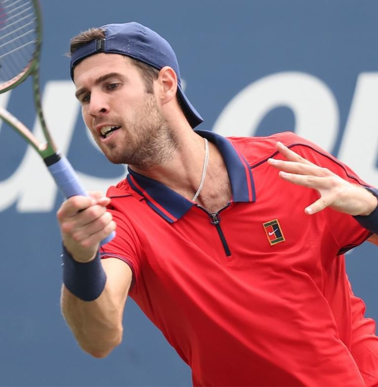
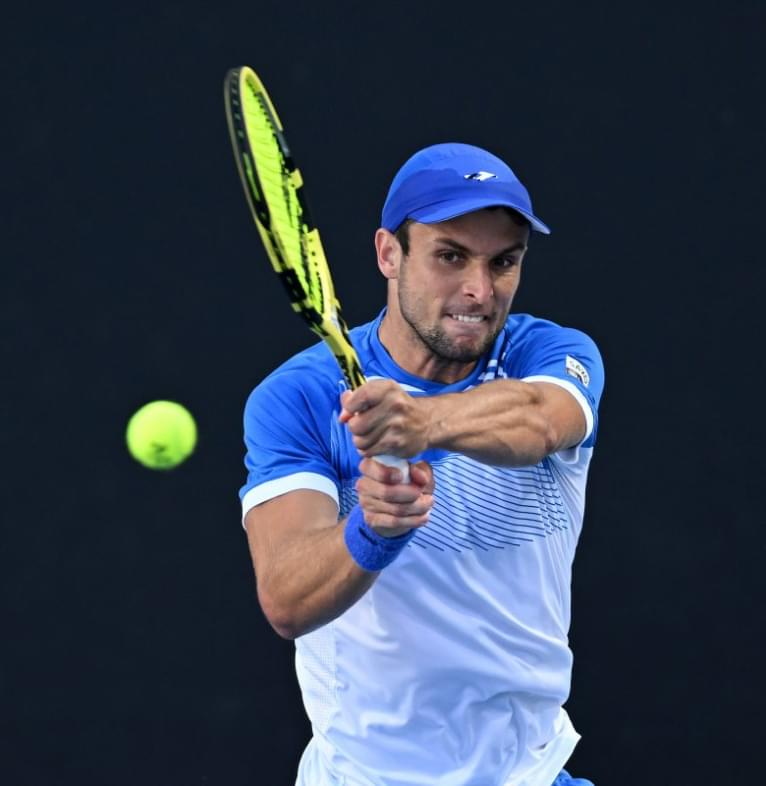

The matchup between Aleksander Vukic and Lloyd George Harris was an epic showdown between two of the best tennis players on the list. Both athletes represent the best representatives of their country and have great potential to achieve high results.
Alexander Vukic and Lloyd Harris showed excellent tennis throughout the match. Their technique and skills were at the highest level, which attracted the attention of viewers from all over the world. Using their best skills and strategies, they created an exciting and tense atmosphere on the court. The whole match was a great example of the highest level of competition in tennis. Tennis players demonstrated unbending will to win and readiness to fight until the last ball. Each prank was a fight for every point, and the audience enjoyed exciting exchanges of blows and dramatic moments.

17.01.2022
03:10
1st round
James Duckworth
Adrian Mannarino
2 : 3
The match between James Duckworth and Adrian Mannarino turned out to be a tennis masterclass from two of the best players on the list. Both tennis players are of the highest class and demonstrate amazing skills on the court.
Duckworth and Mannarino showed their best skills and strategies throughout the match. Their ability to read the game, accuracy and technique were of such a high level that they attracted enthusiastic exclamations from the audience.
Trading powerful baseline shots and unexpected explosive serves, Duckworth and Mannarino created an exciting and dynamic atmosphere on the court. Each draw was like a real test for the athletes, and they coped with it brilliantly, demonstrating their fighting and endurance game.

17.01.2022
05:25
1st round
John Millman
Feliciano Lopez
3 : 1
The match between John Millman and Feliciano López was a spectacular showdown between two tennis players from the best list of players. Both athletes have a truly impressive list of achievements and represent the best representatives of their country.
Millman and Lopez showed the best aspects of their game during the match. Their kicks were accurate, powerful and dynamic, which captured the attention of the audience. Brilliant technique and skills allowed them to control the ball with ease and create difficulties for their opponent.
Both tennis players showed endurance and fighting spirit throughout the match. The rivalry was so intense that each player fought for every ball, leaving his opponent with a difficult choice. Each draw was lively and exciting, leaving no room for relaxation and mistakes.